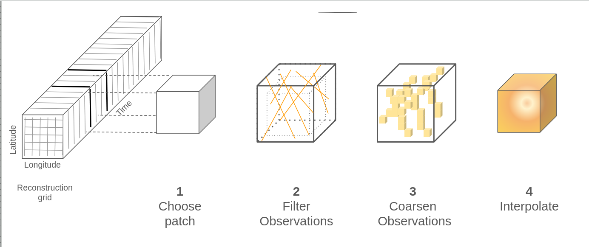
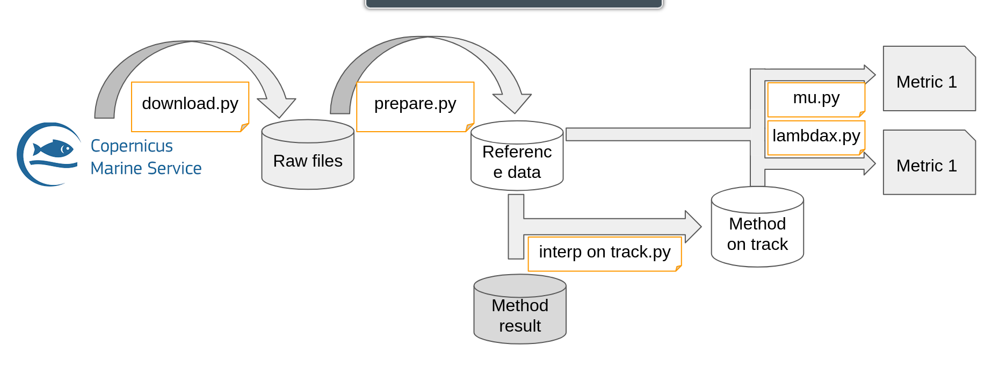
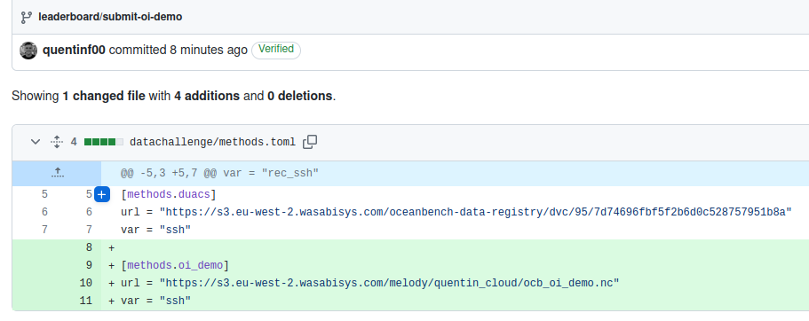
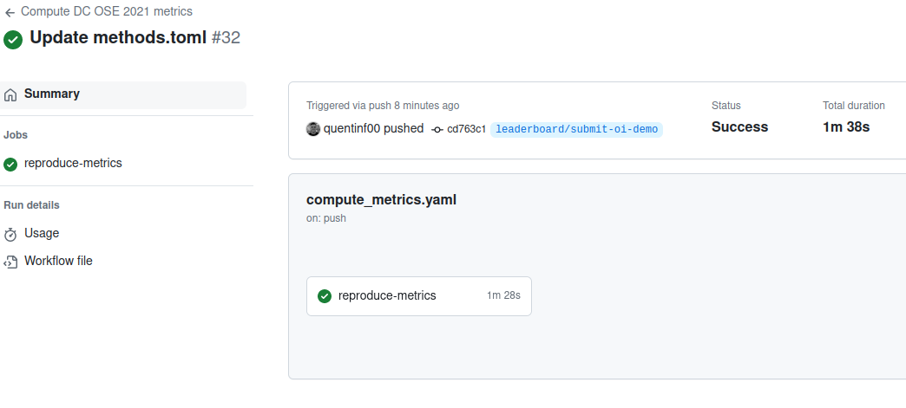
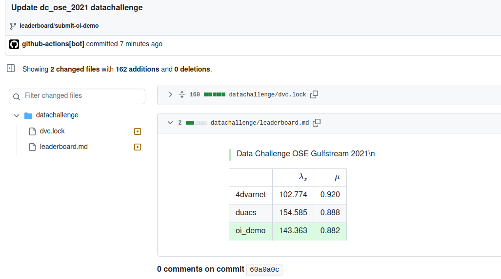

Datachallenge participation: Metrics computation and automated leaderboard update#
Fetching the input data#
More detail in Versioned data access and reproduction
!dvc get https://github.com/quentinf00/oost-demo-ssh-dc.git datachallenge/data/prepared/input
!
Cloning oost-demo-ssh-dc.git| |0.00/? [00:00, ?obj/s]
Cloning oost-demo-ssh-dc.git| | Counting |1.00/276 [00:00, 2.07obj/s]
Cloning oost-demo-ssh-dc.git| | Counting |1.00/276 [00:00, 2.07obj/s]
Cloning oost-demo-ssh-dc.git|███████████| Counting |276/276 [00:00, 2.07obj/s]
Cloning oost-demo-ssh-dc.git| | Compressing | Compressing objects: 1% (2/154)
Cloning oost-demo-ssh-dc.git|████████| Compressing |154/154 [00:00, 2.07obj/s]
Cloning oost-demo-ssh-dc.git|████████| Compressing |154/154 [00:00, 2.07obj/s]
!
0% Downloading input| |0/7 [00:00<?, ?files/s]
!
datachallenge/data/prepared/input/.gitignore |0.00 [00:00, ?B/s]
!
0%| |datachallenge/data/prepared/inpu0.00/454k [00:00<?, ?B/s]
!
0%| |datachallenge/data/prepared/inpu0.00/703k [00:00<?, ?B/s]
!
0%| |datachallenge/data/prepared/inp0.00/2.48M [00:00<?, ?B/s]
!
0%| |datachallenge/data/prepared/inp0.00/2.65M [00:00<?, ?B/s]
29% Downloading input|███████▏ |2/7 [00:00<00:01, 3.10files/s]
!
0%| |datachallenge/data/prepared/inp0.00/2.22M [00:00<?, ?B/s]
95%|█████████▌|datachallenge/data/prepare2.36M/2.48M [00:00<00:00, 23.4MB/s]
!
0%| |datachallenge/data/prepared/inp0.00/2.39M [00:00<?, ?B/s]
87%|████████▋ |datachallenge/data/prepare2.31M/2.65M [00:00<00:00, 22.5MB/s]
92%|█████████▏|datachallenge/data/prepare2.05M/2.22M [00:00<00:00, 20.0MB/s]
86% Downloading input|█████████████████████▍ |6/7 [00:00<00:00, 8.77files/s]
70%|███████ |datachallenge/data/prepare1.69M/2.39M [00:00<00:00, 17.4MB/s]
Show code cell source
import xarray as xr
obs = xr.open_mfdataset('input/*.nc', combine='nested',concat_dim='time')
bin_size = 1/20
(
obs.sel(time='2017-01-01').assign(
lat=obs.lat / bin_size // 1 * bin_size,
lon=obs.lon / bin_size // 1 * bin_size
)[['ssh', 'lat', 'lon']].load()
.drop_vars('time')
.to_dataframe()
.groupby(['lat', 'lon']).mean()
.to_xarray()
).ssh.plot()
<matplotlib.collections.QuadMesh at 0x7f48cf35cd90>
Applying my method: Basic optimal interpolation#

Show code cell content
# GIST: https://gist.github.com/quentinf00/2d034392ee9b385fb4de3c8628bfc8cache44
!wget https://gist.githubusercontent.com/quentinf00/2d034392ee9b385fb4de3c8628bfc844/raw/4afecfce184a6e668def7ec3a99cb6cd4d612bdc/patcher_oi_torch.py
--2024-04-16 14:59:28-- https://gist.githubusercontent.com/quentinf00/2d034392ee9b385fb4de3c8628bfc844/raw/4afecfce184a6e668def7ec3a99cb6cd4d612bdc/patcher_oi_torch.py
Resolving gist.githubusercontent.com (gist.githubusercontent.com)... 185.199.108.133, 185.199.110.133, 185.199.111.133, ...
Connecting to gist.githubusercontent.com (gist.githubusercontent.com)|185.199.108.133|:443... connected.
HTTP request sent, awaiting response...
200 OK
Length: 4247 (4,1K) [text/plain]
Saving to: ‘patcher_oi_torch.py’
patcher_oi_torch.py 0%[ ] 0 --.-KB/s
patcher_oi_torch.py 100%[===================>] 4,15K --.-KB/s in 0s
2024-04-16 14:59:28 (38,4 MB/s) - ‘patcher_oi_torch.py’ saved [4247/4247]
import numpy as np
import xarray as xr
import pandas as pd
from functools import partial
from xrpatcher import XRDAPatcher
from patcher_oi_torch import oi
outgrid = oi(
outgrid_da=xr.DataArray(
dims=('time', 'lat', 'lon'),
coords=dict(
time=pd.date_range("2017-01-01", "2017-12-31"),
lat=np.arange(33, 43, 0.25),
lon=np.arange(-65, -55, 0.25),
),
),
patcher_cls=partial(XRDAPatcher,
patches=dict(time=5, lat=40, lon=40),
strides=dict(time=5, lat=40, lon=40)
),
obs=obs.load(),
lt=pd.to_timedelta('7D'), lx=1., ly=1.,
noise=0.05,
obs_dt=pd.to_timedelta('1D'), obs_dx=0.25, obs_dy=0.25,
device='cuda'
)
0%| | 0/73 [00:00<?, ?it/s]
1%|█▌ | 1/73 [00:03<03:55, 3.26s/it]
3%|███▏ | 2/73 [00:03<01:48, 1.53s/it]
4%|████▋ | 3/73 [00:03<01:08, 1.03it/s]
5%|██████▎ | 4/73 [00:04<00:48, 1.41it/s]
7%|███████▉ | 5/73 [00:04<00:38, 1.77it/s]
8%|█████████▍ | 6/73 [00:04<00:31, 2.10it/s]
10%|███████████ | 7/73 [00:05<00:27, 2.39it/s]
11%|████████████▌ | 8/73 [00:05<00:24, 2.61it/s]
12%|██████████████▏ | 9/73 [00:05<00:22, 2.79it/s]
14%|███████████████▌ | 10/73 [00:06<00:21, 2.92it/s]
15%|█████████████████▏ | 11/73 [00:06<00:20, 3.03it/s]
16%|██████████████████▋ | 12/73 [00:06<00:19, 3.10it/s]
18%|████████████████████▎ | 13/73 [00:06<00:18, 3.16it/s]
19%|█████████████████████▊ | 14/73 [00:07<00:17, 3.34it/s]
21%|███████████████████████▍ | 15/73 [00:07<00:16, 3.55it/s]
22%|████████████████████████▉ | 16/73 [00:07<00:15, 3.78it/s]
23%|██████████████████████████▌ | 17/73 [00:07<00:13, 4.11it/s]
25%|████████████████████████████ | 18/73 [00:08<00:12, 4.40it/s]
26%|█████████████████████████████▋ | 19/73 [00:08<00:11, 4.67it/s]
27%|███████████████████████████████▏ | 20/73 [00:08<00:10, 4.87it/s]
29%|████████████████████████████████▊ | 21/73 [00:08<00:10, 4.98it/s]
30%|██████████████████████████████████▎ | 22/73 [00:08<00:10, 5.03it/s]
32%|███████████████████████████████████▉ | 23/73 [00:08<00:09, 5.05it/s]
33%|█████████████████████████████████████▍ | 24/73 [00:09<00:09, 5.03it/s]
34%|███████████████████████████████████████ | 25/73 [00:09<00:09, 5.03it/s]
36%|████████████████████████████████████████▌ | 26/73 [00:09<00:09, 5.02it/s]
37%|██████████████████████████████████████████▏ | 27/73 [00:09<00:09, 5.02it/s]
38%|███████████████████████████████████████████▋ | 28/73 [00:09<00:09, 4.96it/s]
40%|█████████████████████████████████████████████▎ | 29/73 [00:10<00:08, 4.92it/s]
41%|██████████████████████████████████████████████▊ | 30/73 [00:10<00:08, 4.89it/s]
42%|████████████████████████████████████████████████▍ | 31/73 [00:10<00:08, 4.91it/s]
44%|█████████████████████████████████████████████████▉ | 32/73 [00:10<00:08, 4.87it/s]
45%|███████████████████████████████████████████████████▌ | 33/73 [00:11<00:08, 4.85it/s]
47%|█████████████████████████████████████████████████████ | 34/73 [00:11<00:08, 4.79it/s]
48%|██████████████████████████████████████████████████████▋ | 35/73 [00:11<00:08, 4.60it/s]
49%|████████████████████████████████████████████████████████▏ | 36/73 [00:11<00:08, 4.58it/s]
51%|█████████████████████████████████████████████████████████▊ | 37/73 [00:11<00:07, 4.54it/s]
52%|███████████████████████████████████████████████████████████▎ | 38/73 [00:12<00:07, 4.41it/s]
53%|████████████████████████████████████████████████████████████▉ | 39/73 [00:12<00:08, 4.23it/s]
55%|██████████████████████████████████████████████████████████████▍ | 40/73 [00:12<00:08, 3.97it/s]
56%|████████████████████████████████████████████████████████████████ | 41/73 [00:13<00:08, 3.71it/s]
58%|█████████████████████████████████████████████████████████████████▌ | 42/73 [00:13<00:08, 3.46it/s]
59%|███████████████████████████████████████████████████████████████████▏ | 43/73 [00:13<00:08, 3.39it/s]
60%|████████████████████████████████████████████████████████████████████▋ | 44/73 [00:13<00:08, 3.35it/s]
62%|██████████████████████████████████████████████████████████████████████▎ | 45/73 [00:14<00:08, 3.30it/s]
63%|███████████████████████████████████████████████████████████████████████▊ | 46/73 [00:14<00:08, 3.27it/s]
64%|█████████████████████████████████████████████████████████████████████████▍ | 47/73 [00:14<00:07, 3.25it/s]
66%|██████████████████████████████████████████████████████████████████████████▉ | 48/73 [00:15<00:07, 3.25it/s]
67%|████████████████████████████████████████████████████████████████████████████▌ | 49/73 [00:15<00:07, 3.25it/s]
68%|██████████████████████████████████████████████████████████████████████████████ | 50/73 [00:15<00:06, 3.29it/s]
70%|███████████████████████████████████████████████████████████████████████████████▋ | 51/73 [00:16<00:06, 3.40it/s]
71%|█████████████████████████████████████████████████████████████████████████████████▏ | 52/73 [00:16<00:05, 3.56it/s]
73%|██████████████████████████████████████████████████████████████████████████████████▊ | 53/73 [00:16<00:05, 3.71it/s]
74%|████████████████████████████████████████████████████████████████████████████████████▎ | 54/73 [00:16<00:04, 3.95it/s]
75%|█████████████████████████████████████████████████████████████████████████████████████▉ | 55/73 [00:17<00:04, 4.18it/s]
77%|███████████████████████████████████████████████████████████████████████████████████████▍ | 56/73 [00:17<00:03, 4.37it/s]
78%|█████████████████████████████████████████████████████████████████████████████████████████ | 57/73 [00:17<00:03, 4.46it/s]
79%|██████████████████████████████████████████████████████████████████████████████████████████▌ | 58/73 [00:17<00:03, 4.61it/s]
81%|████████████████████████████████████████████████████████████████████████████████████████████▏ | 59/73 [00:17<00:03, 4.63it/s]
82%|█████████████████████████████████████████████████████████████████████████████████████████████▋ | 60/73 [00:18<00:02, 4.70it/s]
84%|███████████████████████████████████████████████████████████████████████████████████████████████▎ | 61/73 [00:18<00:02, 4.74it/s]
85%|████████████████████████████████████████████████████████████████████████████████████████████████▊ | 62/73 [00:18<00:02, 4.76it/s]
86%|██████████████████████████████████████████████████████████████████████████████████████████████████▍ | 63/73 [00:18<00:02, 4.78it/s]
88%|███████████████████████████████████████████████████████████████████████████████████████████████████▉ | 64/73 [00:18<00:01, 4.90it/s]
89%|█████████████████████████████████████████████████████████████████████████████████████████████████████▌ | 65/73 [00:19<00:01, 4.92it/s]
90%|███████████████████████████████████████████████████████████████████████████████████████████████████████ | 66/73 [00:19<00:01, 4.94it/s]
92%|████████████████████████████████████████████████████████████████████████████████████████████████████████▋ | 67/73 [00:19<00:01, 4.99it/s]
93%|██████████████████████████████████████████████████████████████████████████████████████████████████████████▏ | 68/73 [00:19<00:00, 5.04it/s]
95%|███████████████████████████████████████████████████████████████████████████████████████████████████████████▊ | 69/73 [00:19<00:00, 4.97it/s]
96%|█████████████████████████████████████████████████████████████████████████████████████████████████████████████▎ | 70/73 [00:20<00:00, 4.98it/s]
97%|██████████████████████████████████████████████████████████████████████████████████████████████████████████████▉ | 71/73 [00:20<00:00, 4.92it/s]
99%|████████████████████████████████████████████████████████████████████████████████████████████████████████████████▍ | 72/73 [00:20<00:00, 4.97it/s]
100%|██████████████████████████████████████████████████████████████████████████████████████████████████████████████████| 73/73 [00:20<00:00, 5.01it/s]
100%|██████████████████████████████████████████████████████████████████████████████████████████████████████████████████| 73/73 [00:20<00:00, 3.53it/s]
Visualize results#
Show code cell source
import ocn_tools._src.geoprocessing.geostrophic as geo
(
outgrid.to_dataset(name='ssh')
.pipe(geo.geostrophic_velocities)
.pipe(geo.kinetic_energy)
.isel(time=slice(15, None, 30)
).ke.plot(col='time', col_wrap=3, figsize=(7,10))
)
<xarray.plot.facetgrid.FacetGrid at 0x7f47d24c8d50>
Evaluate#
Fetch reference data#
%%bash
dvc get https://github.com/quentinf00/oost-demo-ssh-dc.git \
datachallenge/data/prepared/ref \
-o data/prepared/ref
Use the configured oost-dc_ose_2021-metrics#

outgrid.to_dataset(name='ssh').to_netcdf('output.nc')
!oost-dc_ose_2021-metrics --cfg job -p params
# @package params
method: default
study_path: data/downloads/method_outputs/${.method}.nc
study_var: ssh
sat: c2
min_time: '2017-01-01'
max_time: '2017-12-31'
min_lon: -65.0
max_lon: -55.0
min_lat: 33.0
max_lat: 43.0
!oost-dc_ose_2021-metrics dry=True
[2024-04-16 14:59:59,918][aprl.appareil][INFO] - Starting
[2024-04-16 14:59:59,918][aprl.appareil][INFO] - Running part _01_dl_track
[2024-04-16 14:59:59,918][aprl.appareil][INFO] - Running part _02_prepare_track
[2024-04-16 14:59:59,918][aprl.appareil][INFO] - Running part _03_interp_on_track
[2024-04-16 14:59:59,918][aprl.appareil][INFO] - Running part _04_1_lambdax
[2024-04-16 14:59:59,918][aprl.appareil][INFO] - Running part _04_2_mu
[2024-04-16 14:59:59,918][aprl.appareil][INFO] - Done
%%bash
oost-dc_ose_2021-metrics params.study_path=output.nc \
'to_run=[_03_interp_on_track,_04_1_lambdax,_04_2_mu]'
[2024-04-16 15:00:02,793][aprl.appareil][INFO] - Starting
[2024-04-16 15:00:02,793][aprl.appareil][INFO] - Running part _03_interp_on_track
[2024-04-16 15:00:02,793][oost_dc_ose_2021.mods.interp_on_track][INFO] - Starting
[2024-04-16 15:00:03,600][oost_dc_ose_2021.mods.interp_on_track][INFO] - Done
[2024-04-16 15:00:03,601][aprl.appareil][INFO] - part _03_interp_on_track done
[2024-04-16 15:00:03,601][aprl.appareil][INFO] - Running part _04_1_lambdax
[2024-04-16 15:00:03,601][oost_dc_ose_2021.mods.lambdax][INFO] - Starting
[2024-04-16 15:00:03,671][oost_dc_ose_2021.mods.lambdax][INFO] - Effective scale resolved (interpolated at score 0.5) 143.37
[2024-04-16 15:00:03,680][oost_dc_ose_2021.mods.lambdax][INFO] - Done
[2024-04-16 15:00:03,681][aprl.appareil][INFO] - part _04_1_lambdax done
[2024-04-16 15:00:03,681][aprl.appareil][INFO] - Running part _04_2_mu
[2024-04-16 15:00:03,681][oost_dc_ose_2021.mods.mu][INFO] - Starting
[2024-04-16 15:00:03,716][oost_dc_ose_2021.mods.mu][INFO] - Mu score: 0.8818722045815395
[2024-04-16 15:00:03,716][oost_dc_ose_2021.mods.mu][INFO] - Done
[2024-04-16 15:00:03,716][aprl.appareil][INFO] - part _04_2_mu done
[2024-04-16 15:00:03,716][aprl.appareil][INFO] - Done
import pandas as pd
import glob
print(pd.concat([pd.read_json(p, typ='series') for p in glob.glob('data/metrics/*.json')]).to_markdown())
| | 0 |
|:------------|-----------:|
| $\lambda_x$ | 143.366 |
| $\mu$ | 0.881872 |
Submit method to datachallenge#
Make your reconstruction public through a http link#
aws s3 cp output.nc s3://melody/quentin_cloud/oost_oi_demo.nc --acl public-read
Commit to a branch leaderboard/* adding your method#

Leaderboard is automatically updated#
 